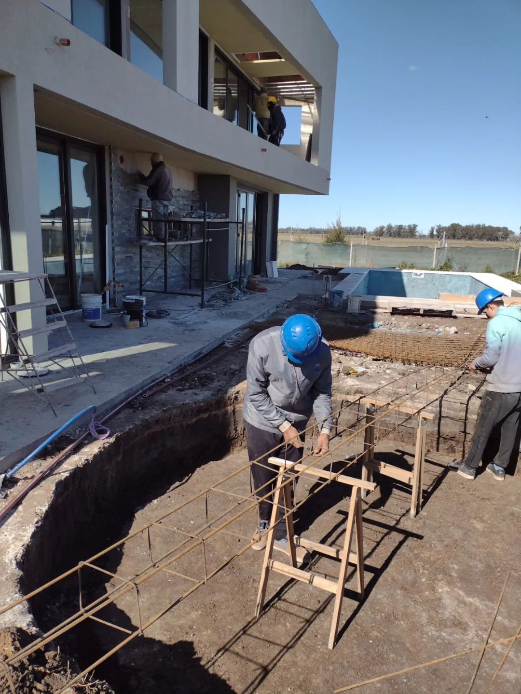
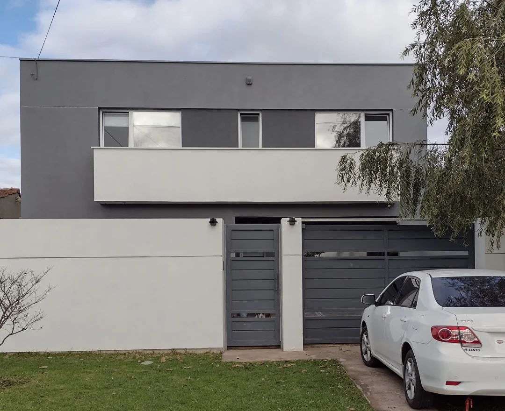
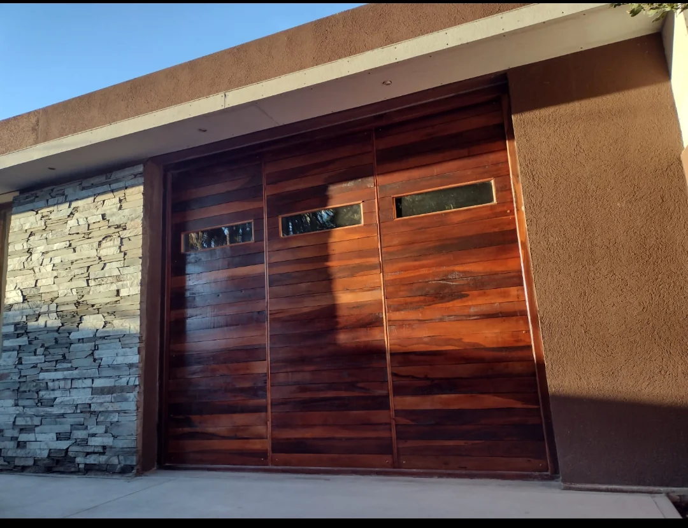
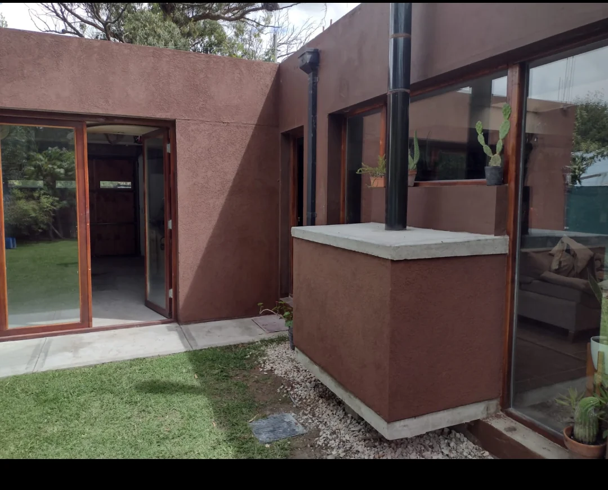
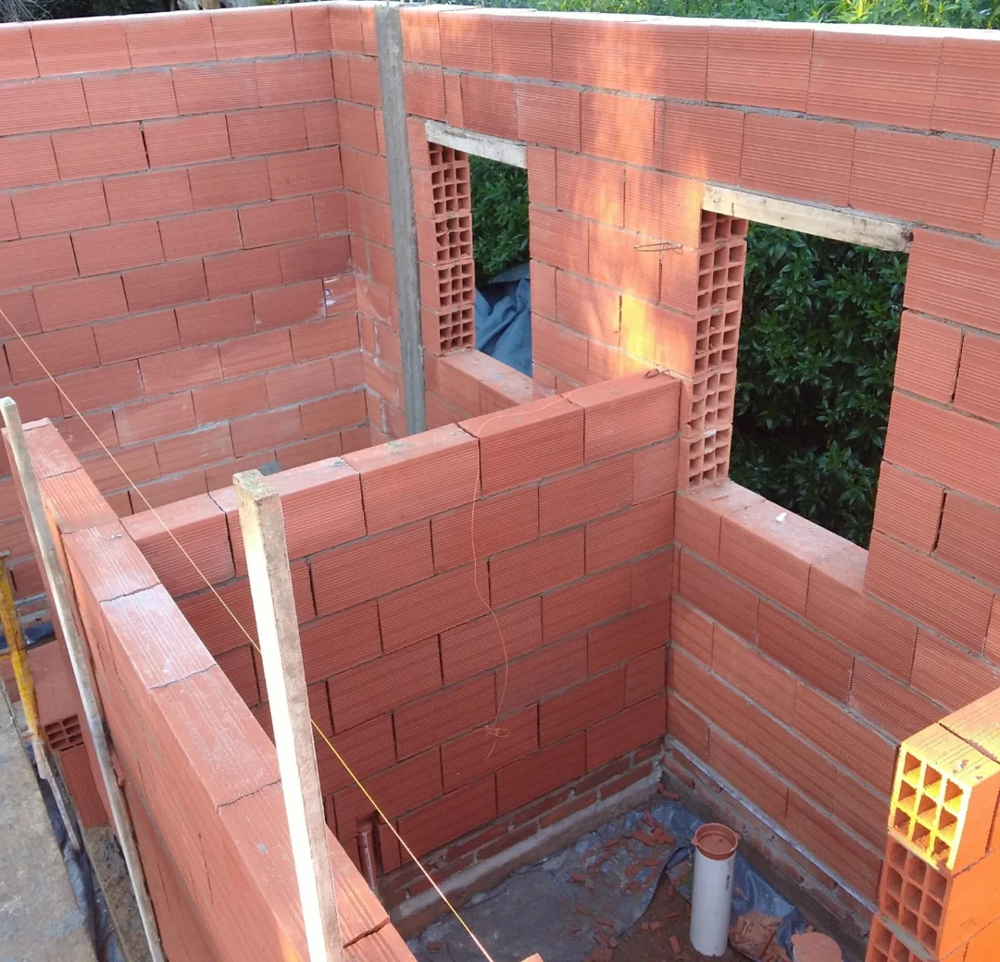
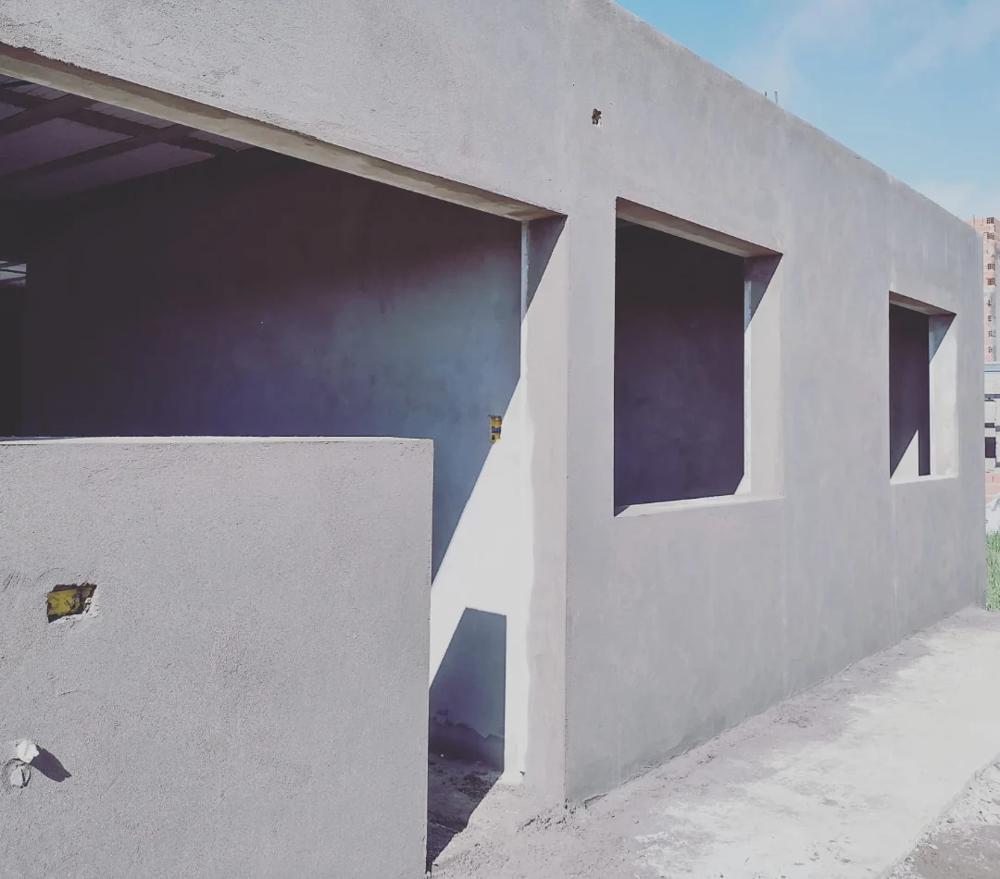
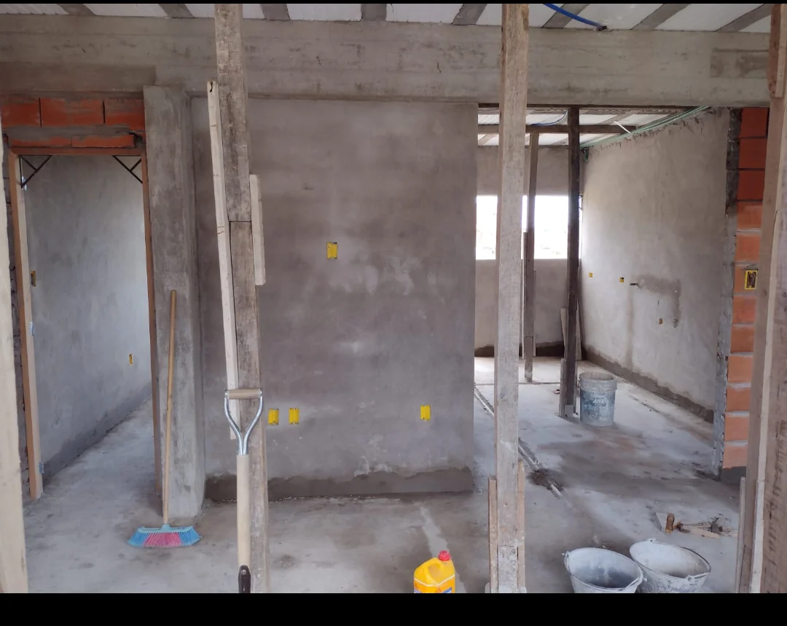
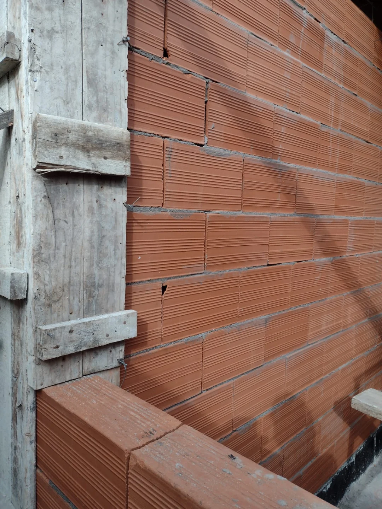
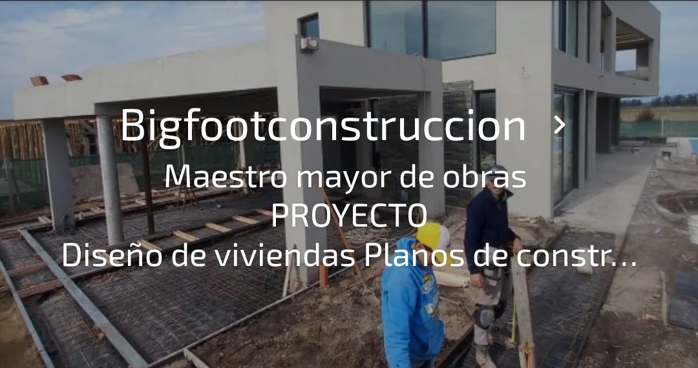

Proyecto · Dirección · Construcción
De la idea
a la obra.
Construcción de viviendas, reformas y soluciones técnicas. Acompañamos cada proyecto desde el primer plano hasta el último detalle.
Hablemos de tu proyecto ↗Qué hacemos
Construcción de viviendasReformas y terminacionesProyecto y dirección de obra
01 / Trabajos
Obras en imágenes.
Una selección de imágenes compartidas desde el catálogo de Bigfoot Construcción. Material preliminar para presentar su actividad.









02 / Sobre Bigfoot
Planificación, técnica y oficio.
Servicios de maestro mayor de obras, desde el proyecto y la dirección hasta la ejecución de trabajos de construcción. Cada etapa requiere atención, criterio técnico y compromiso con los detalles.
03 / Contacto
¿Tenés un proyecto en mente?
Contanos qué necesitás y conversemos sobre tu próxima obra.
Escribir por WhatsApp ↗